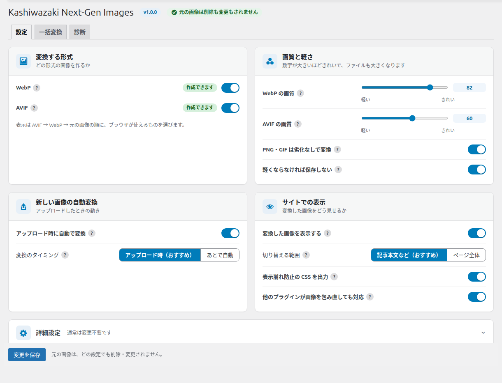
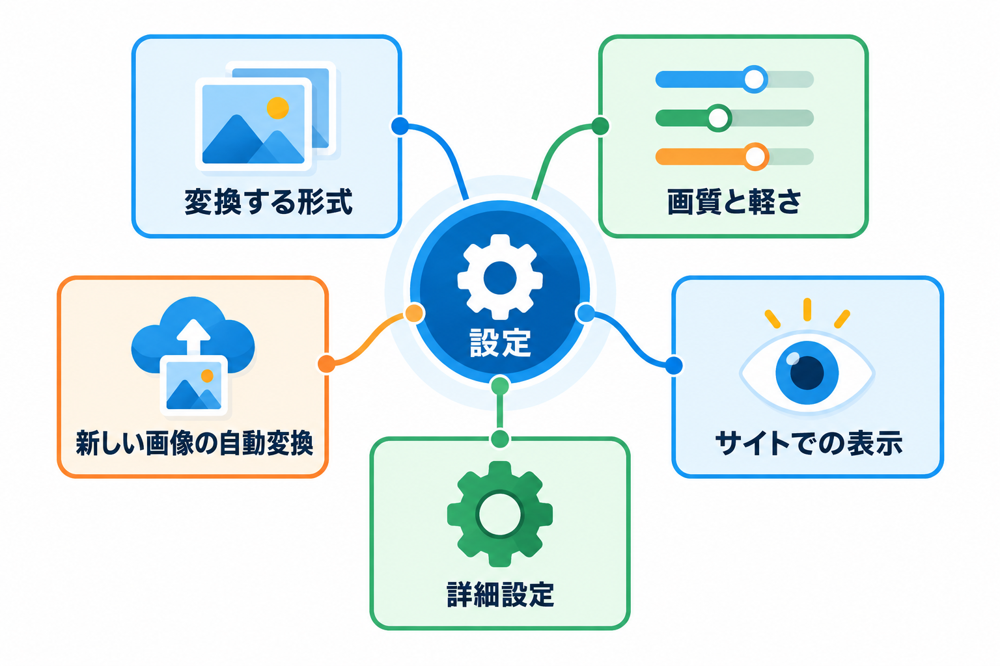
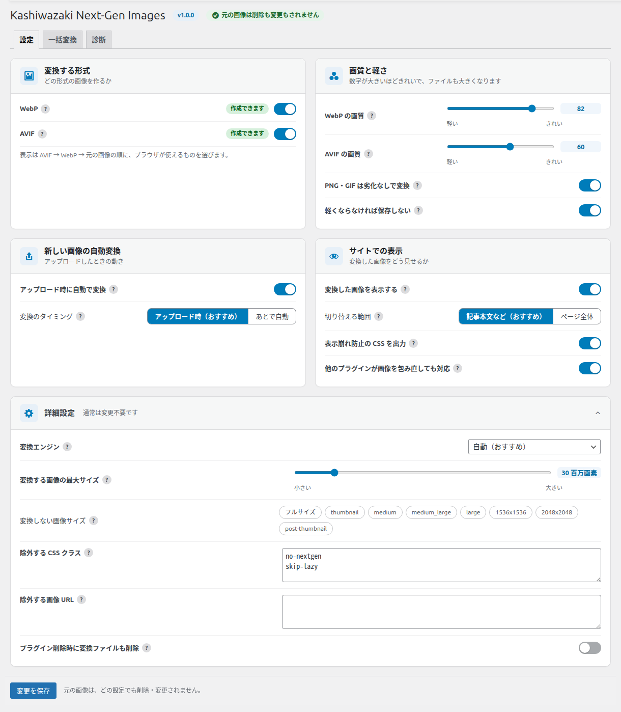
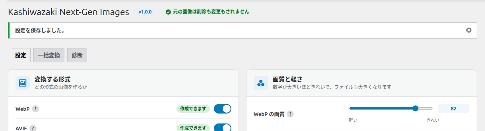

設定タブ
変換する形式・画質・アップロードしたときの動き・サイトでの表示の仕方を決める画面です。初期設定のままで使えるようにしてあります。

画面の構成

| 区画 | ここで決めること |
|---|---|
| 変換する形式 | WebP・AVIF のどちらを作り、表示するか |
| 画質と軽さ | 画質の数値、PNG・GIF の扱い、軽くならないときの扱い |
| 新しい画像の自動変換 | アップロードしたときに変換するか、いつ変換するか |
| サイトでの表示 | 変換した画像を表示するか、どこまで切り替えるか |
| 詳細設定 | 通常は変更不要な項目（変換エンジン、最大サイズ、除外の指定など） |
画面の上には、プラグインの名前・版と「元の画像は削除も変更もされません」の表示があり、その下に「設定」「一括変換」「診断」の 3 つのタブがあります。
各項目の右の「？」にマウスを重ねる（スマートフォンではタップする）と、その項目の説明が表示されます。Esc キーで閉じます。
変換する形式
どの形式の画像を作るかを決めます。
WebP
多くのブラウザで使える、軽い画像形式を作ります。
| 初期値 | オン |
| オンのとき | WebP を作り、サイトで表示します |
| オフのとき | WebP を新しく作りません。すでに作った WebP も表示に使わなくなります（ファイルは残ります） |
| 右のバッジ | 「作成できます」= このサーバーで作れます／「このサーバーでは作れません」= サーバーの PHP が対応していません |
AVIF
WebP よりさらに軽くなる形式を作ります。変換に少し時間がかかります。
| 初期値 | オン |
| オンのとき | AVIF を作り、サイトで表示します |
| オフのとき | AVIF を新しく作らず、すでにある AVIF も表示に使いません（ファイルは残ります） |
| 作れないサーバー | オンのまま保存できますが、変換は行われません。WebP だけで動きます |
「？」の説明には、そのサーバーで画像を作る道具（GD・Imagick）のどれを使うかも表示されます。
表示は AVIF → WebP → 元の画像の順に、ブラウザが使えるものを選びます。
画質と軽さ
数字が大きいほどきれいで、ファイルも大きくなります。
WebP の画質
WebP の画質を 1〜100 で決めます。80 前後が目安です。
| 初期値 | 82 |
| 入力できる範囲 | 1〜100（スライダーで「軽い」〜「きれい」） |
AVIF の画質
AVIF の画質を 1〜100 で決めます。AVIF は低めの数字でもきれいです。60 前後が目安です。
| 初期値 | 60 |
| 入力できる範囲 | 1〜100 |
画質を変えても、すでに作った画像は作り直されません。作り直すには「一括変換」タブで「すべて作り直す」をオンにして一括変換を開始してください。
PNG・GIF は劣化なしで変換
PNG・GIF を、見た目が変わらない「劣化なし」の WebP に変換します。ロゴ・図・スクリーンショットの文字や線が崩れません。
| 初期値 | オン |
| オンのとき | PNG・GIF は劣化なしの WebP だけを作ります。AVIF は劣化なしで作れないため、PNG・GIF の AVIF は作らず、すでにある AVIF も表示に使いません |
| オフのとき | PNG・GIF も、上の画質の設定で WebP・AVIF を作ります |
| 注意 | 写真の PNG では、あまり軽くならないことがあります。サーバーによっては劣化なしの WebP を作れず、「変換なし」になります |
軽くならなければ保存しない
変換したファイルが元の画像より大きい・同じ大きさなら、捨てて元の画像のまま表示します。
| 初期値 | オン |
| オンのとき | 軽くならない画像は「変換なし（軽くならないため）」になります |
| オフのとき | 大きくなっても保存し、表示に使います |
画質は初期値のまま、2 つのスイッチはオンのままがおすすめです。
新しい画像の自動変換
画像をアップロードしたときの動きを決めます。
アップロード時に自動で変換
新しい画像をアップロードしたとき、サムネイルを作り直したとき、画像を編集したときに、自動で変換します。
| 初期値 | オン |
| オフのとき | 自動では変換しません。「一括変換」タブからいつでも変換できます |
変換のタイミング
いつ変換するかを選びます。
| 初期値 | アップロード時（おすすめ） |
| 選択肢 | 動き |
|---|---|
| アップロード時（おすすめ） | アップロードの処理の中で変換します。サーバーの時間制限を超えないよう時間を区切って変換し、終わらなかった分は少しあとで自動で続けます |
| あとで自動 | アップロードの数秒後に、WordPress の予約処理（WP-Cron）が変換します。アップロードは速くなりますが、WP-Cron が動いている必要があります |
画像の編集やサムネイルの作り直しでは、選んだタイミングに関係なく、少しあとに自動で変換します。変換に失敗しても、アップロードそのものは成功します。
サイトでの表示
変換した画像をサイトでどう表示するかを決めます。
変換した画像を表示する
ページの画像を、変換した WebP・AVIF に切り替えて表示します。
| 初期値 | オン |
| オフのとき | 変換したファイルがあっても、元の画像のまま表示します。変換は続きます。表示の問題の切り分けに使えます |
切り替える範囲
どこの画像を切り替えるかを選びます。
| 初期値 | 記事本文など（おすすめ） |
| 選択肢 | 切り替わる画像 |
|---|---|
| 記事本文など（おすすめ） | 記事の本文、アイキャッチ、ウィジェット、画像ブロックの画像。安全な範囲です |
| ページ全体 | ページに出てくるすべての画像。テーマが直接出す画像（ヘッダーのロゴなど）も対象ですが、他のプラグインの出力と干渉することがあります |
CSS の背景画像（background-image）は、どちらを選んでも対象外です。詳しくは サイトでの表示のしくみ を参照してください。
表示崩れ防止の CSS を出力
画像のレイアウトが変わらないよう、1 行の CSS をページに出力します。
| 初期値 | オン |
| オフのとき | CSS を出しません。テーマによっては画像の並びや角の丸みが変わることがあります |
| おすすめ | 通常はオンのままにしてください |
他のプラグインが画像を包み直しても対応
ライトボックスなどが画像を別の要素で包むと、WebP・AVIF が使われず元の画像のままになります。それを自動で直す小さなスクリプトをページに出力します。
| 初期値 | オン |
| オフのとき | 包み直しの修正をしません（他の機能が画像を差し替えたときに元の画像に戻す働きは、オフでも続きます） |
詳細設定
「詳細設定」を押すと開きます。通常は変更不要です。

変換エンジン
画像を作る道具を選びます。指定した道具で失敗したときは、使える別の道具で自動的にやり直します。
| 初期値 | 自動（おすすめ） |
| 選択肢 | 動き |
|---|---|
| 自動（おすすめ） | 使える道具を、Imagick → GD の順に使います |
| GD | GD を先に使い、失敗したら Imagick で作り直します |
| Imagick | Imagick を先に使い、失敗したら GD で作り直します |
指定した道具がその形式を作れないときは、「自動」と同じ動きになります。
変換する画像の最大サイズ
これより大きな画像は、サーバーのメモリ不足を避けるため変換しません。
| 初期値 | 30 百万画素 |
| 入力できる範囲 | 1〜200 百万画素 |
| 超えた画像 | 「変換なし（画素数が上限超過）」になり、元の画像のまま表示します |
| 目安 | 共用レンタルサーバーでは 30 前後が安全です |
変換しない画像サイズ
チェックしたサイズ（フルサイズ、thumbnail、medium など）は変換しません。
| 初期値 | どれもチェックなし |
| 注意 | チェックしても、すでに作ったそのサイズの変換ファイルは消えず、表示にも使われ続けます。通常は何もチェックしなくて構いません |
除外する CSS クラス
このクラスが付いた画像は、元のまま表示します。1 行に 1 つ書きます。
| 初期値 | no-nextgen と skip-lazy |
| 書ける文字 | 英数字・「_」・「-」。最大 100 行。大文字と小文字は区別しません |
| 使う場面 | スライダーなど、画像のまわりの要素を JavaScript で探す機能に不具合が出たとき |
除外する画像 URL
画像の URL にこの文字列が含まれていたら、元のまま表示します。1 行に 1 つ書きます（例: /logo/）。
| 初期値 | 空 |
| 注意 | 表示を切り替えないだけで、変換は行います。最大 100 行 |
プラグイン削除時に変換ファイルも削除
プラグインを「削除」するときに、このプラグインが作った WebP・AVIF も一緒に削除するかを決めます。
| 初期値 | オフ |
| オンのとき | 削除のときに、このプラグインが作った WebP・AVIF を削除します |
| オフのとき | 変換したファイルは残ります |
| 注意 | どちらでも元の画像は削除されません。「無効化」では何も削除されません。設定と変換の記録は、削除のときにどちらでも消えます |
保存
画面の下の「変更を保存」を押すと、すべての項目を保存します。「詳細設定」を閉じたままでも、中の値は一緒に保存されます。保存すると、画面の上に「設定を保存しました。」と表示されます。

この画面に出るメッセージ
| メッセージ | 意味と対処 |
|---|---|
| このサーバーでは WebP・AVIF を作れません（PHP の GD か Imagick が必要です）。… | サーバーに画像を作る道具がありません。変換は行われず、サイトの表示には影響しません。サーバー会社に GD か Imagick を使えるか問い合わせてください |
| WEBP（または AVIF）の配信テストに失敗したため、安全のためこの形式の表示を止めています。… | サーバーがその形式の画像を正しく送れていないため、その形式の表示を止めています。「診断」タブの配信テストを確認してください（診断タブ） |
| 設定を保存しました。 | 保存が完了しました |
配信テストを一度も行っていなければ、設定タブを開いたときに自動で 1 回だけ行います。そのため、開くのに数秒かかることがあります。